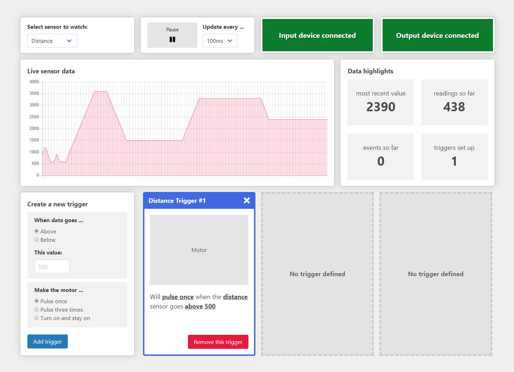

A Dashboard for Everybody!
What is it?
A small, speculative demo project that shows how real-time dashboards, like those used for IoT systems, can be enhanced using accessible design and development practices.
It is intended to be an educational resource providing accessible solutions for common UI/UX challenges found in dashboards, like dealing with charts, working with asynchronous data, and handling dynamic content.
It was (mostly) built as part of IoT HackDay 2019 in St. Paul, MN by Jason Webb and John Haus.
What ISN'T it?
This is not a fully-functioning, ready-to-go system that can be used as-is to manage real IoT devices. Think of this more as a reference that you can point to when building your own dashboard to get some insights about enhancing it's accessibility.

Accessibility features
-
Fully operable via keyboard
-
Chart data is available to people using screen readers through visually-hidden tables.
-
Important asynchronous information (like the availability of input and output devices) is announced through live regions
-
All focusable and interactive elements have strong, consistent focus indicators
-
Meets WCAG 2.0 (Level AA) requirements
-
Works great on mobile devices and tablets, which are very popular among people with motor and visual conditions
Technical details
- Vanilla ES6 JavaScript for interactivity, logic, and DOM manipulation
- Chart.js for live sensor data charts
- MQTT.js for communication with IoT-enabled input and output devices
- Semantic HTML5
- Light usage of ARIA based on WAI-ARIA Authoring Practices and insight from real users
- Gulp-based build system
- Sass for styling, organized using the 7-1 pattern
Sample IoT-enabled input and output devices
For demo purposes at IoT Hackday, we built two devices
Devices are not needed for the demo dashboard, because a mock data layer is used
Technical details
- Huzzah32 dev boards for WiFi communications
- Firmware written using the Arduino framework and IDE
- PubSubClient library for MQTT messaging
Input device with sensors
Output device with motor
Get the source
This project is fully open source and licensed under the MIT license. You are completely free to grab the source code, modify any way you want, and integrate into your project. Some attribution would be nice, but is not necessary 😄
Get the source on GithubSupport
Because this is meant to be more of a learning resource than a ready-to-go package, on-going development and support of this project will be very limited.
If you think of accessibility improvements that can be made, feel free to reach out to the project owner (Jason) and/or create a pull request on the source repository!
-
@jasonwebb on Twitter
-